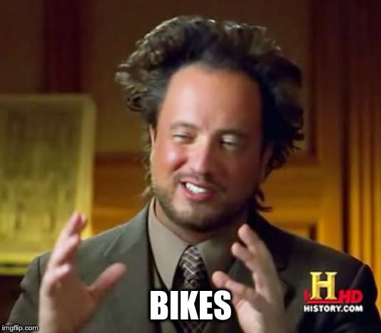

(Achieving trust through thorough thoughtful testing)
Created: 2020-02-06 Thu 11:54

Start simple and build up
Bike time!
As RSpec is a DSL, generally everything you do utilise the DSL
let(:bike) { Bike.new }
let!(:bike) { Bike.new }
subject { bike.gear }
subject! { bike.gear }
subject(:shift_up) { bike.shift_up }
Convey what is being tested
describe Bike do
end
describe "#shift_up" do
subject(:shift_up) { bike.shift_up }
let(:bike) { described_class.new }
end
Convey the state of the world being tested
context "when in highest gear" do
let(:bike) { described_class.new(gear: Bike::MAX_GEAR) }
end
context "when not in the highest gear" do
let(:bike) { described_class.new(gear: Bike::MIN_GEAR) }
end
it "shifts up one gear" do
expect { shift_up }.to change(bike, :gear).by(1)
end
Bike#shift_up when not in the highest gear shifts up one gear
it { expect { shift_up }.to change(bike, :gear).by(1) }
Bike#shift_up when not in the highest gear is expected to change `Bike#gear` by 1
specify { expect { shift_up }.to change(bike, :gear).by(1) }
Bike#shift_up when not in the highest gear is expected to change `Bike#gear` by 1
specify "when called multiple times is idempotent" do
# ...
end
before { bike.remove_chain }
after { bike.install_chain }
# or
around do |example|
bike.remove_chain
example.call
bike.install_chain
end
around suite before before suite around all before before all around each before before each example after each around each after after all around all after after suite around suite after
shared_context "in highest gear" do
let(:bike) { described_class.new(gear: Bike::MAX_GEAR) }
end
describe 'GET /devices' do
let(:resource) { FactoryBot.create(:device, created_from: user) }
it_behaves_like 'a listable resource'
it_behaves_like 'a paginable resource'
it_behaves_like 'a searchable resource'
it_behaves_like 'a filterable list'
end
You should not use it
It's there to help you
Generally either mean you're moving in a direction your tool doesn't want you to.
Various things which generally can't be statically detected and rely on the writer's experience
# bad
it "shifts up one gear" do
previous_gear = bike.gear
shift_up
# ...
expect(bike.gear).to eq previous + 1
end
# good
it "shifts up one gear" do
expect { shift_up }.to change(bike, :gear).by(1)
end
context "when chain is disconnected" do
include_conext "chain disconnected"
it { expect { shift_up }.to raise_error /No chain/ }
end
describe "#remove_chain" do
# ...
context "when chain is attached" do
include_context "chain is attached"
specify do
expect { remove_chain }.to change(bike, :chain_attached?)
.from(true)
.to(false)
end
end
end
describe "#shift_up" do
subject(:shift_up) { bike.shift_up }
specify "when called multiple times increases the gear each time" do
expect { shift_up }.to change(bike, :gear).by(1) # will pass
expect { shift_up }.to change(bike, :gear).by(1) # will fail
end
end
When testing the idempotency of something, if you're calling a
let(e.g. a named subject) you're getting a memoised value which will give you a false sense of idempotency.
describe "#shift_up" do
specify "when called multiple times changes gear each time" do
expect { bike.shift_up }.to change(bike, :gear).by(1) # will pass
expect { bike.shift_up }.to change(bike, :gear).by(1) # will pass
end
end
describe "#shift_up" do
subject(:shift_up) { -> { bike.shift_up } }
specify "when called multiple times changes gear each time" do
is_expected.to change(bike, :gear).by(1) # will pass
is_expected.to change(bike, :gear).by(1) # will also pass
end
end
it { is_expected.to start_with("WARNING:") }
it { is_expected.to end_with "!" }
warning is expected to start with "WARNING:" Failure/Error: it { is_expected.to start_with("WARNING:") } expected "WARN – Something is messed up." to start with "WARNING:"
warning is expected to end with "!" Failure/Error: it { is_expected.to end_with "!" } expected "WARN – Something is messed up." to end with "!"
it "passes our validations", aggregate_failures: true do
expect(warning).to start_with("WARNING:")
expect(warning).to end_with("!")
end
warning passes our validations Got 2 failures:
1.1) Failure/Error: expect(warning).to start_with("WARNING:") expected "WARN – Something is messed up." to start with "WARNING:"
1.2) Failure/Error: expect(warning).to end_with("!") expected "WARN – Something is messed up." to end with "!"
it { is_expected.to start_with("WARNING:").and end_with("!") }
warning is expected to start with "WARNING:" and end with "!" Failure/Error: it { is_expected.to start_with("WARNING:").and end_with("!") }
expected "WARN – Something is messed up." to start with "WARNING:"
…and:
expected "WARN – Something is messed up." to end with "!"
RSpec::Matchers.define :be_a_warning do
match do |actual|
actual.start_with?("WARNING:") && actual.end_with?("!")
end
end
it { is_expected.to be_a_warning }
RSpec::Matchers.define :shift_gear_of do |bike|
match do |actual|
@delta ||= 1
previous_gear = bike.gear
actual.call
bike.gear == previous_gear + delta
end
chain :by, :delta
supports_block_expectations
end
specify { expect { shift_up }.to shift_gear_of(bike).by(1) }
Bike#shift_up when not in the highest gear is expected to shift gear by 1
RSpec::Matchers.define :shift_gear_of do |bike|
match do |actual|
@delta ||= 1
@direction ||= nil
@previous_gear = bike.gear
actual.call
@actual_delta = bike.gear - @previous_gear
@actual_delta == @delta
end
chain :by, :delta
supports_block_expectations
end
chain :up do |delta|
@direction = :up
@delta = delta
end
chain :down do |delta|
@direction = :down
@delta = - delta
end
description do
case @direction
when :up
"shift gear up #{@delta}"
when :down
"shift gear down #{- @delta}"
else
"shift gear by #{@delta}"
end
end
specify { expect { shift_up }.to shift_gear_of(bike).down(1) }
Bike#shift_up when not in the highest gear is expected to shift gear down 1 Failure/Error: specify { expect { shift_up }.to shift_gear_of(bike).down(1) } expected #<Proc:0x000056066cfc6c28@bike_spec.rb:97> to shift gear down 1
failure_message do
actual_direction = @actual_delta > 0 ? :up : :down
["expected block to #{description}",
"but shifted #{actual_direction} #{@actual_delta.abs}"].join(", ")
end
specify { expect { shift_up }.to shift_gear_of(bike).by(1) }
specify { expect { shift_up }.to shift_gear_of(bike).up(1) }
specify { expect { shift_up }.to shift_gear_of(bike).down(1) }
Bike#shift_up when not in the highest gear is expected to shift gear by 1 Bike#shift_up when not in the highest gear is expected to shift gear up 1 Bike#shift_up when not in the highest gear is expected to shift gear down 1 (FAILED - 1)
- Bike#shift_up when not in the highest gear is expected to shift gear down 1 Failure/Error: specify { expect { shift_up }.to shift_gear_of(bike).down(1) } expected block to shift gear down 1, but shifted up 1
Various code snippets and ideas from rubocop rspec-style-guide